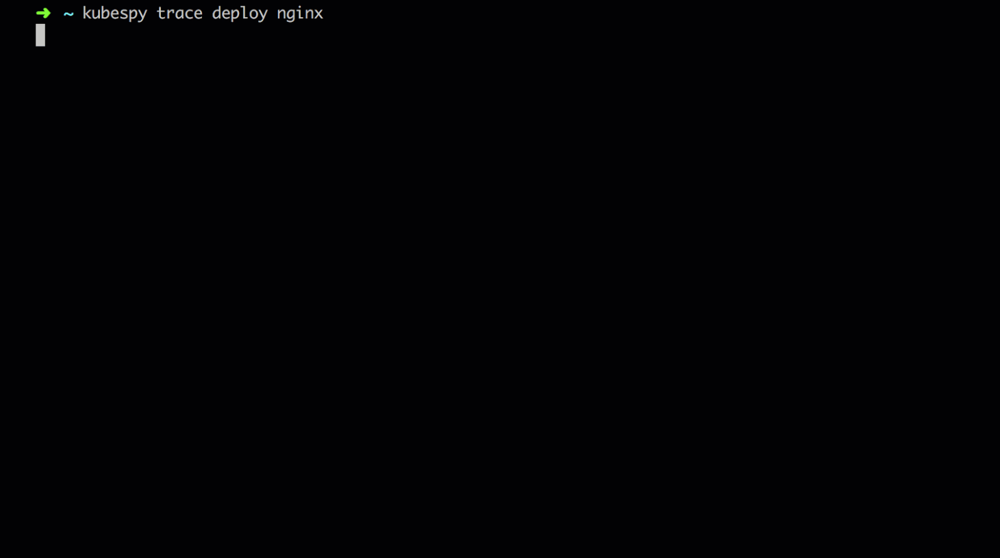
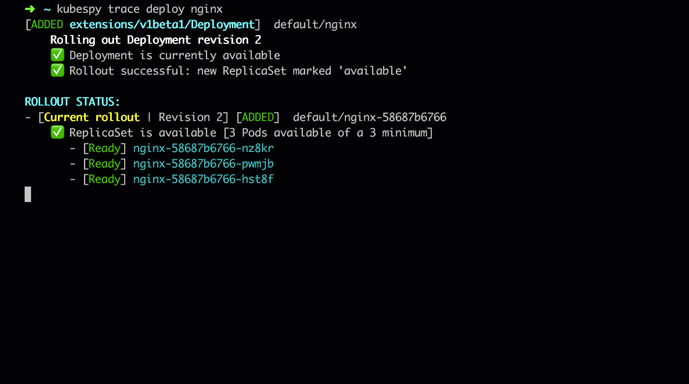

How do Kubernetes Deployments work? An adversarial perspective

This post is part 3 in a series on the Kubernetes API. Earlier,
Part 1
focused on the lifecycle of a Pod and
Part 2
focused on the lifecycle of a Service.
What is happening when a Deployment rolls out a change to your app?
What does it actually do when a Pod crashes or is killed? What happens
when a Pod is re-labled so that it’s not targeted by the
Deployment?
Deployment is probably the most complex resource type in Kubernetes
core. Deployment specifies how changes should be rolled out over
ReplicaSets, which themselves specify how Pods should be replicated
in a cluster.
In this post we continue our exploration of the Kubernetes API, cracking
Deployment open using kubespy, a small tool we developed to observe
Kubernetes resources in real-time.
Using kubespy trace, for example, we can observe at a high level what
happens when Deployment rolls out a new version of an application:

But this post also comes with a twist, because in addition to being
complex, Deployment is also the most dynamic resource in Kubernetes
core. A Pod can crash or be killed. A node can disappear. A user can
trigger a rollout. In each of these cases, some combination of the
Deployment controller, the ReplicaSet controller, and the Kubelet
have to cope.
In other words, understanding Deployment necessarily involves
understanding how it does this coping. We therefore will also use
kubespy trace to observe what happens when we kill and otherwise
bother our Pods.
Following along
The kubespy repository comes with a simple example Kubernetes
app,
which is used in each of these examples. If you want to try it out for
yourself the README contains detailed instructions.
You can use kubectl or pulumi — kubespy CLI itself is powered by
the same code that underlies the core (OSS) Pulumi
engine. If you like this, and would
like to see information like it in CI/CD, we hope you’ll give it a
shot! To get a flavor of what this looks like in practice, you might
also check out my tweetstorm
on the subject.
What happens during a rollout?
The gif in the introduction shows what happens when:
- We deploy the example application.
- Then, later, change the image tag to
nginx:1.12-alpineand deploy again.
When kubespy trace deploy nginx is run, it will watch for changes to
(1) the Deployment called nginx, (1) the ReplicaSets it controls,
and (3) the Pods they control over time. The overall status is
aggregated and printed to the console as they change.
From this gif, we can see 3 distinct phases:
First, the initial state: the Deployment is in a steady state. It
controls a single ReplicaSet, which in turn controls three replicas of
the application Pod. Each Pod is marked as available. We can see
from Deployment’s status that the application is on revision 2,
which means the application has been deployed twice — one initial
deployment, and one update.
Second: the user submits a change to the Deployment, which triggers
a rollout. The Deployment creates a new revision, revision 3. It
creates a new ReplicaSet to represent this revision, and begins to
start Pods with the new app version on it.
This gif is slowed down to show each of these individual changes — in the gif above, you can see these happen in very quick succession.

Third: the new version of the app comes online; the old ReplicaSet
is killed. As the new Pods in revision 3 come online and are
marked available, the Deployment controller begins killing off
replicas from revision 2. Eventually it succeeds and the rollout is
complete.

What happens if we kill a Pod?
Now that we understand the semantics of Deployment’s rollout, we can
see what happens when we use kubectl delete pod <name> on one of the
Pods that is controlled by our Deployment.
As expected, we can see that the ReplicaSet controller notices the
Pod goes missing and spins up a new one. Note that it does not
trigger a rollout, and does not increment the revision.
Notice also that the Pod that was destroyed hangs around for a few
seconds, even though the new one has been booted up and the ReplicaSet
has been marked available.
What happens if we add or remove labels from a Pod?
Try using kubectl edit to delete the labels on one of your Pods.
kubespy trace will show you something the following:
Unlike the “killing a Pod” example above, the old Pod seems to
disappear, replaced by a new Pod that, when booted up, causes the
Deploymentto be marked as available again.
What’s happening here? It turns out that if you remove the app labels
for a Pod, the ReplicaSet controller notices, removes itself from
.metadata.ownerRef, and then treats the Pod as if it’s been
deleted, spinning up a new one immediately.
This is useful: if you notice one of your Pods is behaving strangely,
you can simply take it out of rotation by removing those labels, so that
you can pull it aside and test it.
Conclusion
The Kubernetes API is rich, packed with useful information about the
state of your cluster. It’s remarkable how little it is directly used
to make tools. Combine a little knowledge of Deployment’s .status
field with the Kubernetes Watch API and a bit of terminal UI
programming, you’re most of your way to kubespy trace deployment.
If you enjoyed this post, or are curious to see how this lifecycle is baked into the Pulumi CLI, please give us a shot! We’d love to hear your feedback.
Posted on